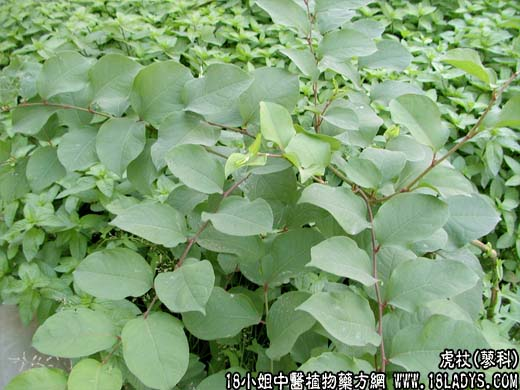

【中药概述】
虎杖为蓼科草本植物虎杖的根茎。苦，寒。归肝、胆、肺经。
1．活血祛瘀：用于血瘀经闭，可与茜草根 益母草等配伍；跌仆肿痛，瘀阻疼痛，可与川芎，红花配伍及风湿痹痛等。
2．利湿退黄：用于湿热黄疸，胆结石，常配茵陈蒿，金钱草等；淋浊、带下，配萆解，薏以仁等证。
3．清热解毒：用于疮痈肿毒、毒蛇咬伤及水火烫伤等。
4．祛痰止咳：用于肺热咳嗽，可与黄芩，枇杷叶等同用。
【药效鉴别】
虎杖清热解毒，活血祛瘀。
【临证应用】
治慢性肝炎，属肝胆湿热型。取虎杖，大枣各30g，水煎早晚服。
【药理作用】
1.煎剂对金黄色葡萄球菌、卡他球菌、甲型或乙型链球菌、大肠、绿脓杆菌有抑制作用；
2.对流感病毒、腺病毒有抑制作用。
【化学成分】
含蒽醌类化合物，如大黄素、大黄素-8-葡萄糖甙、大黄酚、大黄酸等。
【用量用法】
10——35g，水煎服。外用适量。鲜品捣烂外敷。